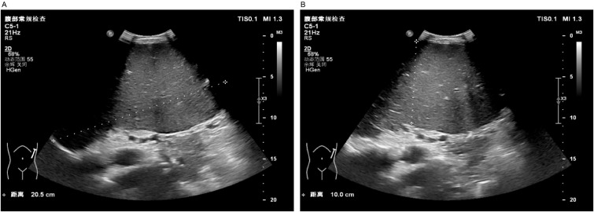

Ficha del catálogo
Esplenomegalia
- Sistema
- Digestivo
- Modalidad
- US
- Región
- Bazo
- Dificultad
- Básico
Es el aumento del tamaño del bazo por encima de los límites normales, hallazgo frecuente y siempre secundario a otro proceso. Sus causas principales son la hipertensión portal, las infecciones, las enfermedades hematológicas, los procesos infiltrativos y las enfermedades por depósito. Reconocerla obliga a buscar la causa y a valorar el riesgo de complicaciones como el hiperesplenismo o la rotura.
Técnica
El ultrasonido es el método inicial por su disponibilidad y por su ausencia de radiación. Se explora por vía intercostal izquierda con el paciente en decúbito supino o en decúbito lateral derecho, aprovechando la inspiración para desplazar el bazo por debajo de la parrilla costal. Se mide el eje mayor en el plano que muestre el hilio y el polo superior en la misma imagen.
Qué observar
- Diámetro craneocaudal del bazo medido en su eje mayor real
- Ecoestructura del parénquima, homogénea en la congestión y heterogénea en los procesos infiltrativos
- Vasos del hilio esplénico y presencia de colaterales tortuosas
- Bazos accesorios, que son nódulos con la misma ecogenicidad situados cerca del hilio
- Signos asociados de hipertensión portal, como ascitis, contorno hepático nodular y vena porta dilatada
- Lesiones focales, infartos o hematomas subcapsulares dentro del parénquima aumentado
Hallazgos
El bazo aparece aumentado de tamaño, con el polo inferior que sobrepasa el riñón izquierdo y que puede alcanzar la línea media en los casos marcados. Como referencia práctica se considera aumentado cuando el eje mayor supera unos 12 a 13 cm en el adulto, aunque el punto de corte debe adaptarse a la talla y a la constitución del paciente. La congestión por hipertensión portal produce un parénquima homogéneo con vasos hiliares prominentes, mientras que la infiltración por procesos hematológicos suele dar una textura más heterogénea. En las formas masivas conviene documentar la relación del polo inferior con las estructuras vecinas.
Perlas
La medición aislada tiene poco valor si no se acompaña de la búsqueda de la causa, porque el bazo aumentado es un síntoma y no un diagnóstico. Conviene revisar el hígado, el eje portal, los ganglios y la médula ósea visible antes de cerrar el informe. En el paciente con esplenomegalia importante conviene mencionar el mayor riesgo de rotura ante traumatismos, dato con implicación práctica en deportistas y en pacientes con mononucleosis.
Diagnóstico diferencial
- Bazo de morfología variante o lobulado
- Contorno irregular con volumen conservado y medidas dentro de lo normal.
- Masa de la cola del páncreas o suprarrenal izquierda
- Lesión independiente del bazo con plano de separación identificable.
- Bazo accesorio prominente
- Nódulo redondeado con la misma ecogenicidad y el mismo comportamiento que el bazo, cerca del hilio.
- Linfoma esplénico
- Bazo aumentado con nódulos hipoecogénicos y adenopatías asociadas.
- Quiste o pseudoquiste esplénico voluminoso
- Lesión de contenido líquido bien delimitada que desplaza el parénquima sin infiltrarlo.
Simuladores
- Medición en un plano oblicuo que sobreestima el eje mayor
- Lóbulo hepático izquierdo prominente que se extiende hacia el hipocondrio izquierdo
- Colección subfrénica que aparenta continuidad con el bazo
Por modalidad
- US
- Método inicial para medir el bazo, valorar la ecoestructura y buscar signos de hipertensión portal
- TC
- Permite calcular el volumen esplénico con mayor exactitud y estudiar adenopatías y otras causas abdominales
- RM
- Caracteriza el parénquima y detecta depósito de hierro o lesiones focales cuando existe duda
Protocolo
Ultrasonido con transductor convexo de 3 a 5 MHz por vía intercostal izquierda, con el paciente en decúbito supino y en decúbito lateral derecho, midiendo el eje mayor en el plano que contenga el hilio y el polo superior. Se completa con Doppler del hilio esplénico y de la vena porta. En tomografía se emplea fase portal con reconstrucciones coronales para el cálculo de volumen.
Clasificación
Errores frecuentes
- Medir en un plano oblicuo y sobreestimar el tamaño
- Informar el aumento sin buscar de forma dirigida la causa en el hígado, el eje portal y los ganglios
- Confundir un bazo accesorio con una adenopatía o con una masa suprarrenal

esplenomegalia bazo hipertension portal ultrasonido bazo accesorio hiperesplenismo medicion